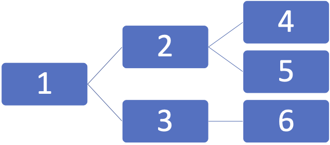

weave.distance¶
Calculate the distance between points.
Distance functions to calculate the distances between the current point and a vector of nearby points. While points can be either scalars or vectors, scalars must be cast as 1D vectors to comply with Numba just-in-time compilation.
Notes
In general, distance functions should satisfy the following properties 1:
\(d(x, y)\) is real-valued, finite, and nonnegative
\(d(x, y) = 0\) if and only if \(x = y\)
\(d(x, y) = d(y, x)\) (symmetry)
\(d(x, y) \leq d(x, z) + d(z, y)\) (triangle inequality)
References
- weave.distance.dictionary(x, Y, distance_dict)[source]¶
Get dictionary distances between x and Y.
Returns user-defined distances between points x and Y, specified in the dictionary distance_dict. Dictionary keys are tuples of point ID pairs (x, y), and dictionary values are the corresponding distances. Because distances are assumed to be symmetric, point IDs are listed from smallest to largest, e.g. x \(\leq\) y.
- Parameters
x (1D numpy.ndarray of float) – Current point.
Y (2D numpy.ndarray of float) – Matrix of nearby points.
distance_dict (numba.typed.Dict of {(float32, float32): float32}) – Typed dictionary of distances between points.
- Returns
Dictionary distances between x and Y.
- Return type
1D numpy.ndarray of nonnegative float32
Notes
Because this is a Numba just-in-time function, the parameter distance_dict must be of type numba.typed.Dict. Dictionaries can be cast as a typed dictionary using the function
get_typed_dict(), but values are not checked for validity.Examples
Get user-defined distances between points based on scalar point IDs.
>>> import numpy as np >>> from weave.distance import dictionary, get_typed_dict >>> distance_dict = { (4, 4): 0, (4, 5): 1, (4, 6): 2, (5, 6): 2 } >>> typed_dict = get_typed_dict(distance_dict) >>> x = np.array([4.]) >>> y = np.array([[4.], [5.], [6.]]) >>> dictionary(x, y, typed_dict) array([0., 1., 2.], dtype=float32)
- weave.distance.euclidean(x, Y)[source]¶
Get Euclidean distances between x and Y.
- Parameters
x (1D numpy.ndarray of float) – Current point.
Y (2D numpy.ndarray of float) – Matrix of nearby points.
- Returns
Euclidean distances between x and Y.
- Return type
1D numpy.ndarray of nonnegative float32
Notes
For a pair of 1D points, this function computes the absolute value of their difference:
\[d(x, y) = |x - y|\]For a pair of ND points, this function computes the n-dimensional Euclidean distance 2:
\[d(x, y) = \sqrt{(x_1 - y_1)^2 + (x_2 - y_2)^2 + \dots + (x_n - y_n)^2}\]References
Examples
Get distances between scalar points.
>>> import numpy as np >>> from weave.distance import euclidean >>> x = np.array([0.]) >>> Y = np.array([[-1.], [0.], [1.]]) >>> euclidean(x, Y) array([1., 0., 1.], dtype=float32)
Get distances between vector points.
>>> import numpy as np >>> from weave.distance import euclidean >>> x = np.array([0., 0.]) >>> Y = np.array([[-1., -1.], [0., 0.], [1., 1.]]) >>> euclidean(x, Y) array([1.4142135, 0., 1.4142135], dtype=float32)
- weave.distance.tree(x, Y)[source]¶
Get tree distances between x and Y.
Points are specified as a vector of IDs corresponding to nodes in a tree, starting from the root node and ending at a leaf node. The distance between two points is defined as the number of edges between the leaf nodes and their nearest common parent node.
- Parameters
x (1D numpy.ndarray of float) – Current point.
Y (2D numpy.ndarray of float) – Matrix of nearby points.
- Returns
Tree distances between x and Y.
- Return type
1D numpy.ndarray of nonnegative float32
Examples
Get distances between leaf nodes from the following tree.
>>> import numpy as np >>> from weave.distance import tree >>> x = np.array([1., 2., 4.]) >>> Y = np.array([[1., 2., 4.], [1., 2., 5.], [1., 3., 6.]]) >>> tree(x, Y) array([0., 1., 2.], dtype=float32)
- weave.distance.get_typed_dict(distance_dict=None)[source]¶
Get typed version of distance_dict.
- Parameters
distance_dict (dict of {(number, number): number}, optional) – Dictionary of distances between points.
- Returns
Typed version of distance_dict.
- Return type
numba.typed.Dict of {(float32, float32): float32}
Examples
Cast a dictionary as an instance of numba.typed.Dict.
>>> from weave.distance import get_typed_dict >>> distance_dict = {(1, 1): 0} >>> get_typed_dict(distance_dict) DictType[UniTuple(float32 x 2),float32]<iv=None>({(1.0, 1.0): 0.0})